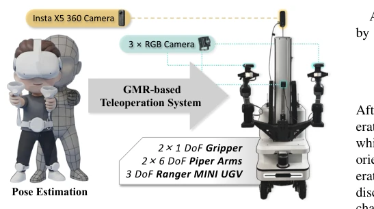
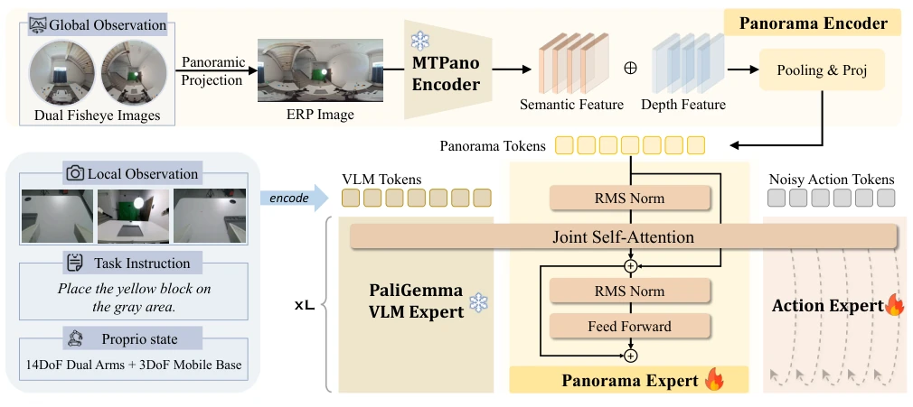
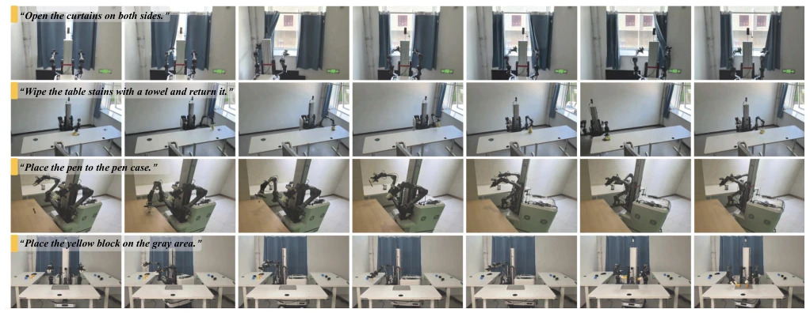

This paper equips mobile manipulation VLA with "panoramic glasses" to address local field-of-view blind spots. The authors developed a VR full-body teleoperation setup, collected 5.5 hours of data, and trained a PanoVLA model. The results are indeed impressive, with an end-to-end success rate reaching 73.4%, more than doubling that of the pure local view π0.5 [3]. However, we must temper expectations: panoramic views are not a panacea. Although specialized encoders like MTPano [35] are effective, their generalization capability remains questionable. The barrier to entry for VR equipment is also not low, and ordinary laboratories may not be able to afford it. Furthermore, 800 trajectories are considered a small sample size in the VLA community; whether it can withstand more complex open-world tasks remains to be seen. Overall, the engineering implementation is solid, but whether "panoramic" represents over-marketing depends on future generalization performance.
The core pain point of mobile manipulation lies in the contradiction between "moving" and "seeing". Existing VLA models, such as π0.5 [3], mostly rely on local cameras; once a target moves out of the field of view or self-occlusion occurs, the policy fails. Although some works attempt multi-view fusion [11], simply stacking image streams cannot establish coherent global spatial cognition. At the data level, collecting demonstrations that coordinate the base and dual arms is extremely difficult; traditional teleoperation often separates control [9], resulting in unsmooth actions. This paper aims to solve spatial understanding problems through panoramic perception and address data collection efficiency through GMR teleoperation [13], enabling robots to learn to maintain global spatial understanding while in motion.
The overall process is divided into three steps. First, a VR-based full-body teleoperation system is built, mapping human sparse motion to the robot base and dual arms via GMR [13]. Second, a multimodal dataset is collected containing 360-degree panoramic, local RGB, and proprioceptive data. The core model PanoVLA is based on the MoT architecture and introduces a Panoramic Expert. The panoramic encoder uses MTPano [35] to process dual fisheye images, generating ERP panoramic features, which are then converted to visual tokens via a Token Adapter. The Panoramic Expert and VLM Expert's KV Cache undergo joint self-attention fusion, and finally, the Action Expert generates actions. This design allows the model to simultaneously utilize local fine-grained manipulation cues and global spatial context, achieving information flow control through block-level causal attention masks.

Fig. 1. Overview of the whole-body teleoperation pipeline. Sparse human-motion measurements acquired with the wearable VR interface are reconstructed into an SMPL model and retargeted through GMR to the wheeled bimanual robot.

Fig. 2. Overview of the proposed PanoVLA framework, which incorporates panoramic context into a vision-language-action model for mobile manipulation.
Testing was conducted on four real tasks (move pen, move block, open curtain, wipe table). Baselines include the pure local view π0.5 [3] and a variant with simple panoramic concatenation. PanoVLA achieved an average stage completion rate of 91.3% and an end-to-end success rate of 73.4%, far exceeding π0.5's 58.6% and 30.0%. Ablation experiments show that the 100M parameter Panoramic Expert performs best, and the MTPano encoder outperforms SigLIP. This indicates that panoramic geometric representation is crucial for long-horizon tasks, and simple image stitching cannot replace specialized panoramic modeling. Although the data scale is not large, it validates the effectiveness of panoramic perception on specific tasks.

Fig. 3. Representative real-world closed-loop rollouts across the four mobile manipulation tasks. Across multiple large-workspace, multi-stage tasks, PanoVLA leverages panoramic context for spatial understanding and task-state tracking, while effectively coordinating the mobile base and dual arms.